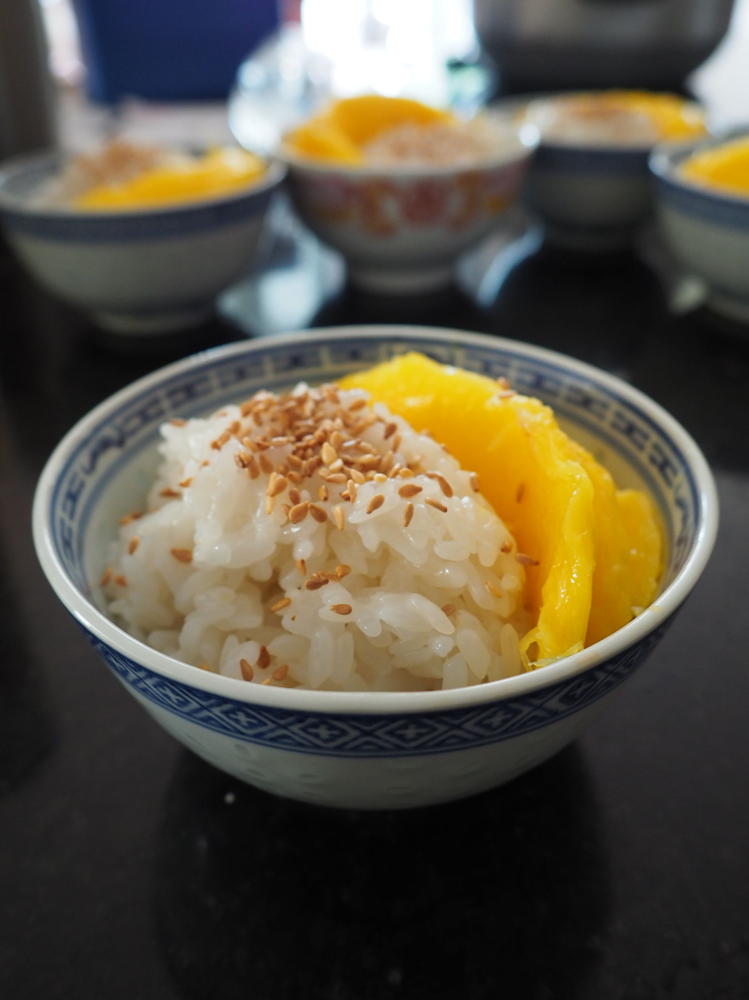
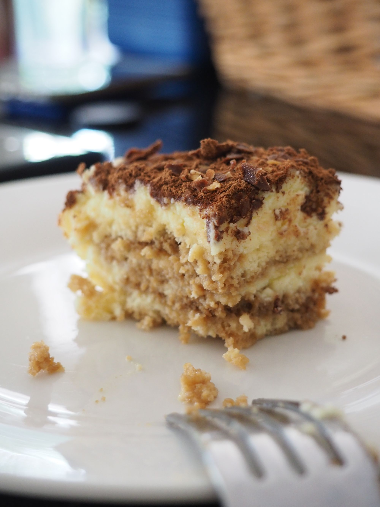
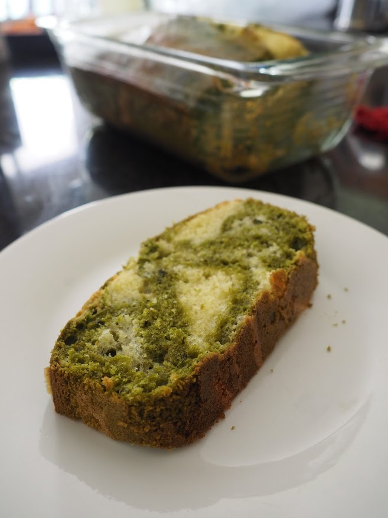
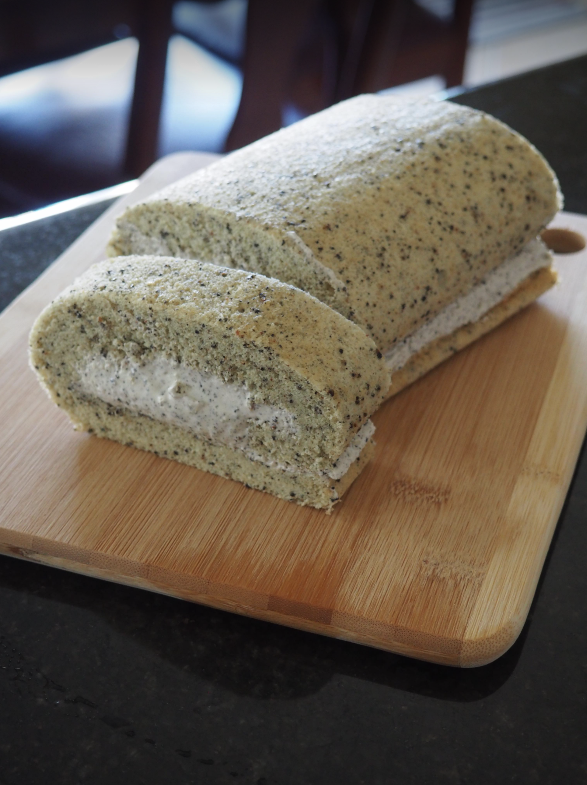

👩🏻🍳 Cooking up recipes
With all this extra time at home (and in the kitchen), I started making and baking my favorite desserts.




📷 Shooting photos
Using my phone and camera to practice my amateur composition and editing skills.